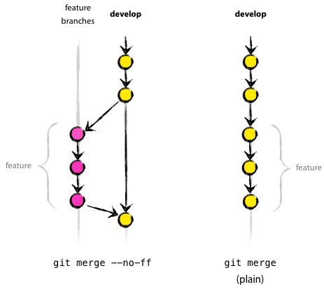

Maintainer Notes#
This is for those with read-write access to upstream. It is recommended to name the upstream remote something to remind you that it is read-write:
git remote add upstream-rw git@github.com:statsmodels/statsmodels.git
git fetch upstream-rw
Git Workflow#
Grabbing Changes from Others#
If you need to push changes from others, you can link to their repository by doing:
git remote add contrib-name git://github.com/contrib-name/statsmodels.git
git fetch contrib-name
git branch shiny-new-feature --track contrib-name/shiny-new-feature
git checkout shiny-new-feature
The rest of the below assumes you are on your or someone else’s branch with the changes you want to push upstream.
Rebasing#
If there are only a few commits, you can rebase to keep a linear history:
git fetch upstream-rw
git rebase upstream-rw/main
Rebasing will not automatically close the pull request however, if there is one, so do not forget to do this.
Merging#
If there is a long series of related commits, then you’ll want to merge. You may ask yourself, Merging: To Fast-Forward or Not To Fast-Forward? See below for more on this choice. Once decided you can do:
git fetch upstream-rw
git merge --no-ff upstream-rw/main
Merging will automatically close the pull request on github.
Check the History#
This is very important. Again, any and all fixes should be made locally before pushing to the repository:
git log --oneline --graph
This shows the history in a compact way of the current branch. This:
git log -p upstream-rw/main..
shows the log of commits excluding those that can be reached from upstream-rw/main, and including those that can be reached from current HEAD. That is, those changes unique to this branch versus upstream-rw/main. See Pydagogue for more on using dots with log and also for using dots with diff.
Push Your Feature Branch#
All the changes look good? You can push your feature branch after Merging or Rebasing by:
git push upstream-rw shiny-new-feature:main
Cherry-Picking#
Say you are interested in some commit in another branch, but want to leave the other ones for now. You can do this with a cherry-pick. Use git log –oneline to find the commit that you want to cherry-pick. Say you want commit dd9ff35 from the shiny-new-feature branch. You want to apply this commit to main. You simply do:
git checkout main
git cherry-pick dd9ff35
And that’s all. This commit is now applied as a new commit in main.
Merging: To Fast-Forward or Not To Fast-Forward#
By default, git merge is a fast-forward merge. What does this mean, and when do you want to avoid this?
{kind=link}

(source nvie.com, post “A successful Git branching model”)#
The fast-forward merge does not create a merge commit. This means that the existence of the feature branch is lost in the history. The fast-forward is the default for Git basically because branches are cheap and, therefore, usually short-lived. If on the other hand, you have a long-lived feature branch or are following an iterative workflow on the feature branch (i.e. merge into main, then go back to feature branch and add more commits), then it makes sense to include only the merge in the main branch, rather than all the intermediate commits of the feature branch, so you should use:
git merge --no-ff
Handling Pull Requests#
You can apply a pull request through fetch and merge. In your local copy of the main repo:
git checkout main
git remote add contrib-name git://github.com/contrib-name/statsmodels.git
git fetch contrib-name
git merge contrib-name/shiny-new-feature
Check that the merge applies cleanly and the history looks good. Edit the merge message. Add a short explanation of what the branch did along with a ‘Closes gh-XXX.’ string. This will auto-close the pull request and link the ticket and closing commit. To automatically close the issue, you can use any of:
gh-XXX
GH-XXX
#XXX
in the commit message. Any and all problems need to be taken care of locally before doing:
git push origin main
Releasing#
Checkout main:
git checkout statsmodels/main
Clean the working tree with:
git clean -xdf
But you might want to do a dry-run first:
git clean -xdfn
Locally tag the release. For a release candidate, for example:
git tag -a v0.10.0rc1 -m "Version 0.10.0 Release Candidate 1" 7b2fb29
or just:
git tag -a v0.10.0rc1 -m "Version 0.10.0 Release Candidate 1"
to use the last commit in main.
Checkout the tag:
git checkout tags/v0.10.0rc1
Build a sdist to ensure that that the build is clean:
python -m build --sdist .
It is important that the build on the tar.gz file is the same as the tag. It must not be dirty
If on a new minor release (major.minor.micro format) start a new maintenance branch, for example:
git checkout -b maintenance/0.10.x
Any bug fixes and maintenance commits intended for the next micro release should be made against main as usual, but tagged with the milestone for the micro release it is intended for. Then merge into main as usual. When ready to do the backports, use the file
tools/backport_pr.pyto identify which PRs need to be backported and to apply them to the maintenance branch. The tag for the release should be made in the maintenance branch.Upload the source distribution to PyPI:
twine upload dist/*
You might want to upload to test first:
twine upload --repository-url https://test.pypi.org/legacy/ dist/*
Go back to the main branch, and add an empty commit:
git checkout statsmodels/main git commit --allow-empty -m "Start of 0.11.0 development" git tag -a v0.11.0.dev0 -m "Start of 0.11.0 development"
Push everything to statsmodels:
git push --tags
If a new branch was created:
git push --set-upstream origin maintenance/0.10.x
Make an announcement, and inform maintainers of wheel builders.
Profit?
Releasing from Maintenance Branch#
Once any patches have been backported to a maintenance branch, the release steps are
Checkout the branch:
git checkout maintenance/0.10.x
Clean up thoroughly:
git clean -xdf
Locally tag the release:
git tag -a v0.10.0 -m "Version 0.10.0"
Checkout the tag:
git checkout tags/v0.10.0
Build a sdist to ensure that that the build is clean:
python -m build --sdist .
It is important that the build on the tar.gz file is the same as the tag. It must not be dirty.
Upload the source distribution to PyPI ot PyPI test:
twine upload dist/*
or:
twine upload --repository-url https://test.pypi.org/legacy/ dist/*
Push the tag to statsmodels:
git push --tags
Make an announcement, and inform maintainers of wheel builders.
Commit Comments#
Prefix commit messages in the main branch of the main shared repository with the following:
ENH: Feature implementation
BUG: Bug fix
STY: Coding style changes (indenting, braces, code cleanup)
DOC: Sphinx documentation, docstring, or comment changes
CMP: Compiled code issues, regenerating C code with Cython, etc.
REL: Release related commit
TST: Change to a test, adding a test. Only used if not directly related to a bug.
REF: Refactoring changes